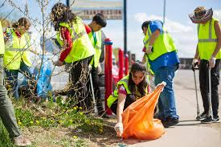
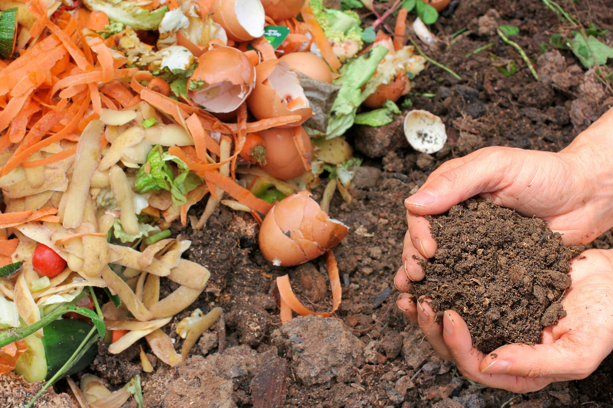

Keeping Our City Clean and Green
Join hands with the local waste management program to reduce waste, promote recycling, and make our environment sustainable.

Local Waste Gallery
Snapshots from our community clean-up drives and recycling initiatives.

Community Cleanup Drive
Local volunteers cleaning up plastic waste in residential areas.

Composting Unit
Turning organic waste into compost for community gardens.

Waste Segregation
Citizens sorting waste into dry, wet, and recyclable materials.
Waste Management Tips
- Use three bins — dry, wet, and hazardous waste.
- Compost organic waste at home or in your community.
- Clean recyclables before disposal to prevent contamination.
- Donate or recycle old electronics instead of discarding.
- Say no to single-use plastics — use reusable containers.

Report Waste
Help us keep the city clean by reporting uncollected or illegally dumped waste. Upload a photo and share the location.